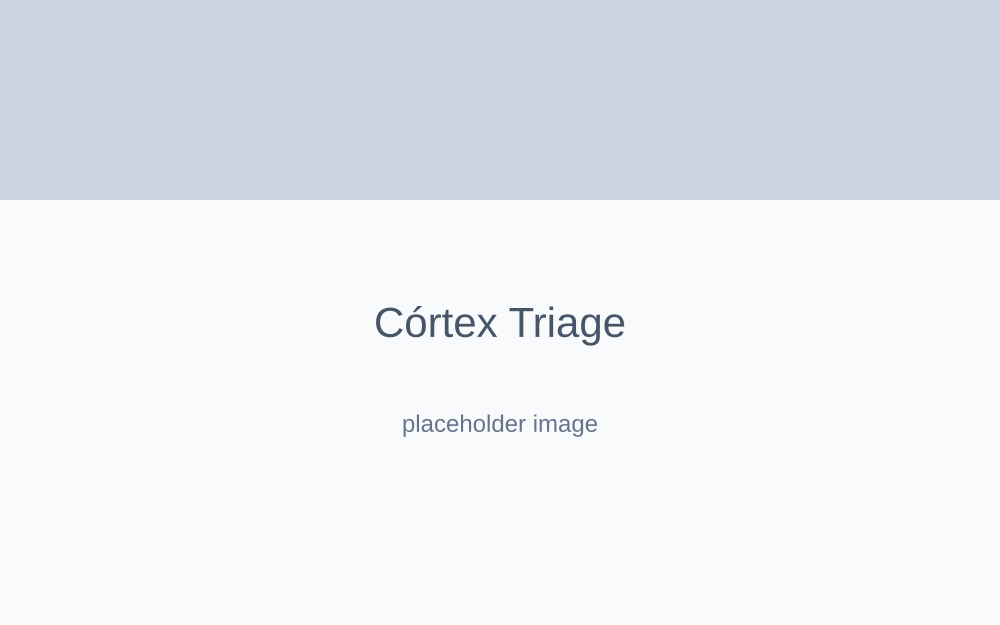

Córtex Global
Sistema de apoio a decisão médica focado em triagem inteligente utilizando arquitetura corporativa segura.
Contexto & Problema
Em ambientes médicos, as plataformas de triagem frequentemente exigem inúmeros formulários extensos que podem confundir o paciente ou atrasar o fluxo de atendimento da clínica. É necessário extrair semântica das descrições humanas e classificá-las clinicamente antes que o operador sequer analise.
Objetivo
Implementar a prova de conceito do Córtex Global, utilizando a API da Google AI para inferir classificações de urgência primária baseada em texto livre do paciente, apresentando tudo em um painel focado em legibilidade máxima para o atendente humano.
Arquitetura & Tecnologias
- Frontend Base: React (Client-side) orquestrando componentes e estados visuais altamente responsivos e limpos.
- AI Layer: Integração com a Google AI (Gemini) atuando como oráculo classificador.
- Garantia de Qualidade (QA): Uso do framework Playwright para Testes End-to-End (E2E), assegurando que o fluxo principal da triagem não se quebre sob uso.
Decisões Técnicas & Desafios
Testes E2E são vitais em áreas de saúde (HealthTech). Implementar o Playwright garantiu que a jornada central de preenchimento, submissão, espera pela API do Gemini e retorno da inferência à tela fossem sistematicamente assegurados em rotinas de CI.
Galeria & Mockups

Conclusão
A união do React para UI reativa e do Playwright para robustez testada solidifica a visão de engenharia corporativa, onde a responsabilidade pelo produto final é tão grande quanto a da arquitetura estruturante.